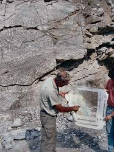

| In English |
| In English |
Südliches Harzvorland und Kyffhäuser
Gipskarstgebiet am Südharz
|  |
| Bild: Aufschluß in einem Gips-Steinbruch in der Nähe von Wieda. Exkursion des Geologischen Instituts der TU Braunschweig unter der Leitung von Prof. Wachendorf. |
Am südlichen Harzrand, wo nur eine schwache Hebung stattgefunden hat, finden wir ein etwa 5km breites Gebiet, das fast 100km weit parallel zum Südrand des Harzes verläuft. Hier tritt der Zechstein-Gips mit großen Mächtigkeiten auf.
Vor mehr als 225 Mio. Jahren befand sich im Gebiet von Norddeutschland eine große Senke (=Geosynklinale), in der große Mengen Wasser eindampften und dabei Kalk, Anhydrit, Steinsalz und Kalisalz ablagerten. Die Ablagerung dieser vier Salze in genau dieser Reihenfolge ist auf ihre unterschiedliche Löslichkeit zurückzuführen. Eine solche Abfolge wird auch Serie genannt. Im Zechstein werden vier Serien unterschieden:
- die Werra-Serie (Z I).
- die Staßfurth-Serie (Z II).
- die Leine-Serie (Z III).
- die Aller-Serie (Z IV).
Besonders durch die großen Gipsmächtigkeiten der Werra-Serie konnte sich hier das bedeutendste Gipskarstgebiet Deutschlands bilden. Diese Mächtigkeit von rund 100 m ist häufig sogar an der Oberfäche zu erkennen, da sie eine kleine Schichtstufe zur Folge hat. Besonders deutlich ist dies bei Düna zu sehen. Die Zechsteinschichten streichen herzynisch und fallen variszisch, die Stufe verläuft in herzynischer Richtung.
 |
| Bild: Gipskarren sind sehr häufig im Gipskarst. Durch die hohe löslichkeit des Gipses bilden sie sich sehr schenll,werden aber auch genau so schnell wieder zerstört. |
Der Anhydrit weist eine feine Schichtung auf, wobei die einzelnen etwa 2 bis 3 cm dicken Anhydrit Schichten durch eine dunkle, sehr dünne Tonschicht getrennt sind. Offensichtlich entsprechen die Anhydritschichten einer Periode des Eindampfens und die Tonschichten einer Periode der Ruhe, in der sich die Schwebstoffe (Tonmineralien) ablagern konnten. Außerdem besitzt der Ahydrit vor allem in der Nähe des Harzes eine, durch den Aufstieg des Harzes verursachte, Faltung.
Fast auf die gesamte Länge wird der südliche Harzrand von einem Gipskarstgebiet begleitet. Leider sind nur noch wnige Reste davon erhalten. Massiver Abbau des Anhydrit als Baustoff hat über Jahrzehnte hinweg große Flächen in riesige Stenbrüche verwandelt. Und auch heute noch, in Zeiten in denen Rauchgas-Entschwefelungsanlagen Gips in großen Mengen und in Hervorragender Qualität produzieren, schwinden die letzten Gipskarstgebiete mit zunehmender Geschwindigkeit. Gleichzeitig muß der Gips aus den Entschwefelungsanlagen entsorgt werden.
Etwa 5km S des Harzes befindet sich der Kyffhäuser. Dieser Höhenzug ist etwa 12km lang und 6km breit. Er entstand zur gleichen Zeit wie der Harz und durch die gleichen Kräfte. Deshalb ist seine geologische Struktur verwandt. Auch hier finden wir am S-Rand große Gipskarstgebiete. Die Erhebung selbst dagegen besteht vor allem aus Rotliegendem und ist deshalb nicht verkarstungsfähig.
Es gibt hier zahlreiche Höhlen, Erdfälle, Wasserschwinden, unterirdische Wasserläufe und Trockentäler. Derzeit sind ca 40 Höhlen und über 80 Erdfälle bekannt.
Wichtigste Höhle ist natürlich die Schauhöhle
 Barbarossahöhle
BarbarossahöhleSehenswürdigkeiten dieser Region
- Barbarossahöhle
- Heimkehle
 Mansfeld Museum
Mansfeld Museum Mittelbau Dora
Mittelbau Dora Nixseebecken
Nixseebecken- Karstwanderweg
 Rhumequelle
Rhumequelle- Salzaspring
- Erlebnisbergwerk Sondershausen
 Zwergenkirche
Zwergenkirche
 Gipshöhlen und Gipskarst
Gipshöhlen und Gipskarst Natur Bilder aus dem Gipskarst
Natur Bilder aus dem Gipskarst